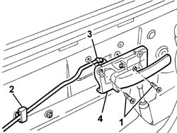

7010C54 rear side door internal opening return mechanism (with handle) - r r for repair or replacement with door panel removed
- Path
- Procedures > 70 FITTINGS > 7010 PASSENGER COMPARTMENT REAR SIDE DOORS > 7010C rear lock controls > 7010C54 rear side door internal opening return mechanism (with handle) - r r for repair or replacement with door panel removed
- Kind
- repair procedure (removal / refitting; the operation number is the code)
- Applies to
- all engines; all production periods
- Interactive page
- https://sloeber94.github.io/elrnDB-a147/en/#/3025706
Applies to: all engines; all production periods
 Removing
Removing
 Refitting
Refitting1. Unscrew the bolts
2. Disconnect the retainer from the door frame.
3. Disconnect the linkage from the handle.
4. Recover the handle.

Applies to: all engines; all production periods
Refitting
RemovingCheck that the handle is undamaged.
Connect the linkage to the handle.
Connect the retainer to the door frame.
Fit the handle.
Tighten the screws.
Topics that link to this page (7)
- 7010C51 rear side door inner catch return device - r+r for repair or replacement
- 7010C55 rear side door interior opening return device (with handle) - r+r for repair or replacement
- 7010C64 handle link yo lock - r r
- 7010C65 handle link to lock - r r
- 7010N20 rear side door lock motor/catch assembly - r r with door panel and support frame removed
- 7010N21 rear side door lock motor-lock assembly r r
- 7205E38 Stripping REAR SIDE DOOR